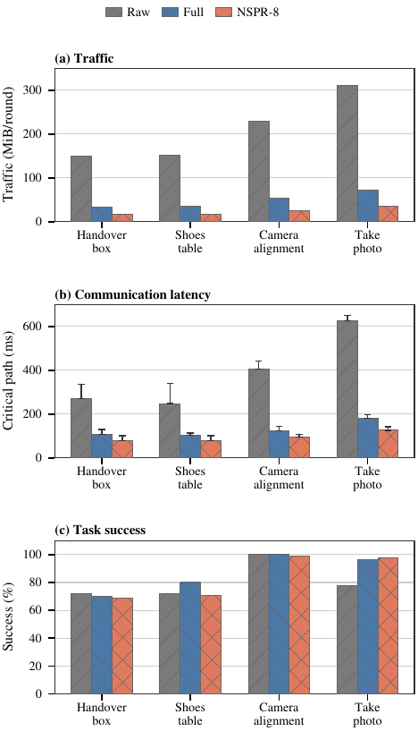

Common semantics
Synchronizes shared task and scene context at selected transformer boundaries.
Communication-efficient embodied intelligence
Communication-Efficient Coordination for Scalable Networks of VLA Agents
One complete VLA agent controls each arm. Explicit intermediate-representation messages coordinate teams from one to four agents without expanding a fixed joint-action model.
From a fixed policy to an agent fabric
Centralized multi-arm policies bind observations, coordination, and action dimensions to one computation graph. VLA-Fabric instead treats every arm-side VLA as a complete action-producing endpoint. Team size changes the communication graph, not an agent's local action interface.

System architecture
Raw observations and local queries remain on-device. Coordination crosses the agent boundary only through named representations whose traffic and timing can be measured.

One interface across team sizes
The same agent abstraction is evaluated from one to four arms. Each panel shows the actual task state rather than an illustrative rendering.
1 agent
SingleVLA policy; communication is not applicable.
2 agents
Handover box, Shoes Table, and Handover Mic.
3 agents
Camera Alignment and Stack Cube.
4 agents
Four local policies coordinate a compositional task.
Distributed agents remain close to the centralized TwinVLA reference on ALOHA and substantially outperform the reported RoboFactory DP baseline as team size grows.
| Agents | Task | Reference | VLA-Fabric |
|---|---|---|---|
| 2 | Handover box | 76.0% | 75.0% |
| 2 | Shoes Table | 83.0% | 78.0% |
| 2 | Handover Mic | 94.5% | 81.5% |
| 3 | Camera Alignment | 19.0% | 100.0% |
| 3 | Stack Cube | 22.0% | 75.0% |
| 4 | Take Photo | 20.0% | 96.5% |
Two-agent references use TwinVLA. Three- and four-agent references use RoboFactory DP trained with 150 demonstrations. Protocol details are provided in the paper.
Communication audit and screening
Quantization lowers payload but retains a dense synchronization schedule. A hidden workspace removes representation redundancy; NSPR then screens synchronization layers against downstream action impact and paired closed-loop safety.


Anonymous research artifacts
Ten-page INFOCOM draft with nine pages of body content and one page of references.
Code
Training, distributed evaluation, communication auditing, and NSPR screening.
Data
Paired conditions, summary tables, and communication-profile metadata.